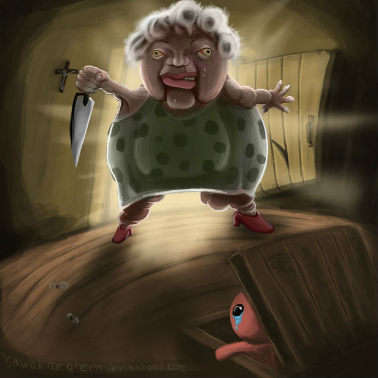
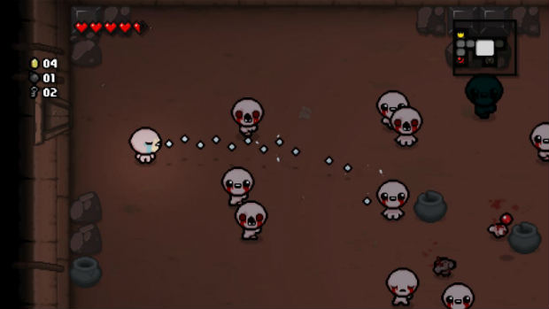

The Binding of Isaac Rebirth («Жертвоприношение Айзека»: Воскрешение) – это можно сказать переиздание одной из самых жутких и необычных изометрических аркад 2011 года «The Binding of Isaac».
⇒ Обновлённая игра не позиционируется, как что-то новое или инновационное. Разработчики честно рассказали о своих планах, а в частности: довести геймплей до ума, пересобрать графическую составляющую, набить игру контентом и забросить её на консоль. Поэтому сам проект Rebirth стоит понимать, как отработку по не завершенной идее и не более того.
Как и в оригинале, вся история «воскрешения» крутится вокруг одной семьи, маленького мальчика Айзека и его набожной матери. Где-то вдали от цивилизации, на холме в небольшом домике, весело и дружно живут сын с матерью. Жизнь прекрасна и проста: малой играется с игрушками, рисует картинки и держит улыбку до ушей, пока добрая и любящая мама проводит время за религиозными шоу по телевизору.
Всё хорошо и прекрасно… Но однажды, мама услышала голос якобы господа (в голове), что немедля потребовал оградить Айзека от греха и порока. Женщина беспрекословно подчинилась и отобрала все игрушки и заперла сына в комнате, причем голышом. И вновь голос потребовал от женщины спасения души её отпрыска, но на этот раз при помощи жертвоприношения.
The Binding of Isaac Rebirth – roguelike аркада с видом сверху, в которой весь игровой процесс копирует классический устаревший консольный жанр со всеми его атрибутами (сердечками вместо жизней, примитивной графикой и прочим). От roguelike достались: одна попытка, отсутствие сохранений и случайно генерируемое прохождение.
Герой игры окажется посреди жуткого лабиринта с комнатами, битком на трамбованными всякого рода нечистью и мерзостью. Нам по-прежнему дают только одну попытку, заставляют собирать монетки и сердечки, а также сотни других прикольных и очень нужных при выживании вещичек.
На месте и «рандомизатор» уровней, подбирающий уникальное прохождение для каждого забега в отдельности. Будут и ловушки, мерзкие боссы, секреты с супер оружием, легкая прокачка, десятки игровых персонажей и просто хренова туча ачивок.
Второе – рандомизатор стал немного скромнее. Он не лепит теперь сразу по порядку два-три комнаты с очень сильными врагами (засадами), от которых без потерь не уходят. Все игровые сложности разбиты на зоны и если вы только что миновали что-то трындец какое жесткое, то будьте уверены, в следующей комнате такой же свистопляски не повторится.